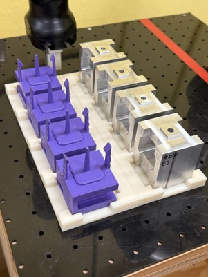
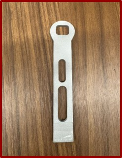
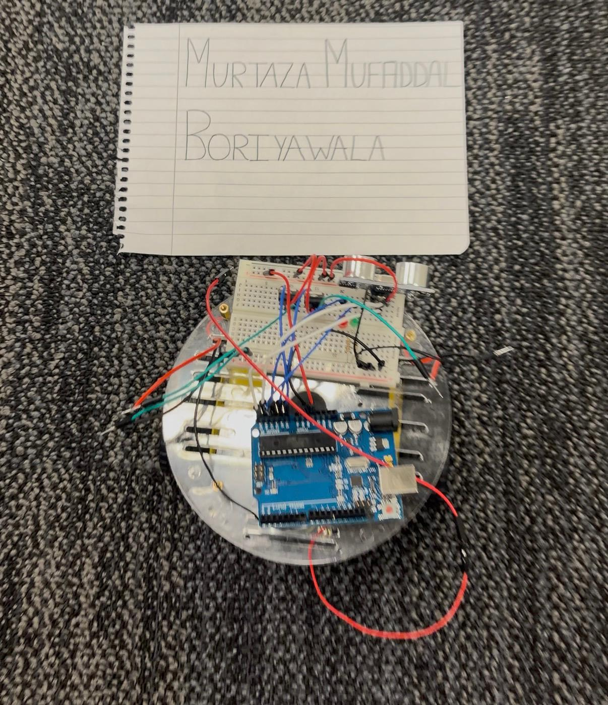
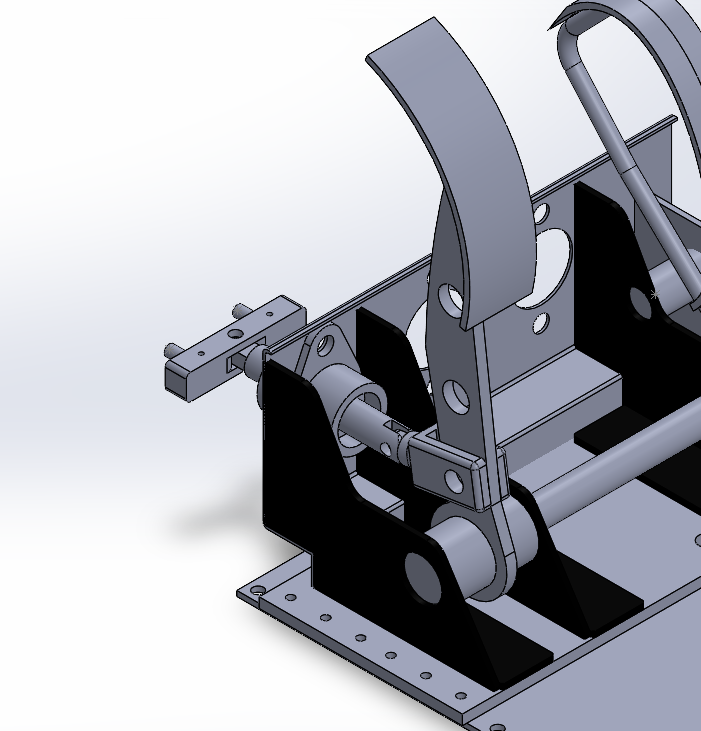

THE PORTFOLIO / 04 PROJECTS
Designed. Tested.
Made real.
A selection of projects across mechanical design, robotics, and manufacturing. Explore the process behind each one.

01Manufacturing / Robotics
Robotic assembly fixture
A custom fixture for the UR5e collaborative robot. Designed for repeatable positioning, robot accessibility, and a smoother assembly workflow.

02Product design / FEA
Ultralight bicycle wrench
From stress calculations to the machine shop: a 27.7 g aluminum wrench with an integrated tire lever, built to withstand 250 in-lb of torque.

03Mechatronics / Embedded systems
Obstacle-detecting car
An Arduino-powered vehicle that translates ultrasonic sensor input into real-time obstacle avoidance, detecting objects up to three feet away.

04Vehicle systems / Mechanical design
Mass Mileage braking system
A compact brake assembly for an ultra-efficient vehicle, integrating bicycle disc brake hardware with a custom pedal and hydraulic linkage.